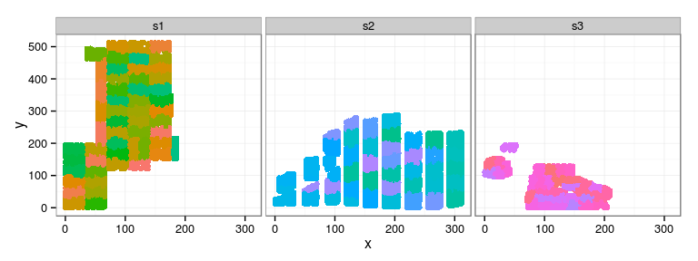
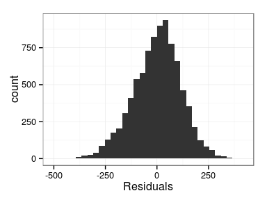
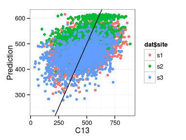
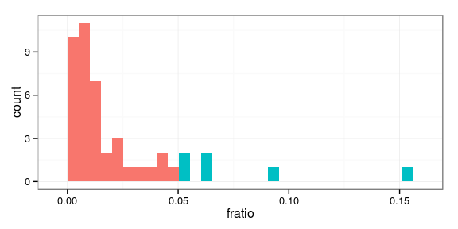
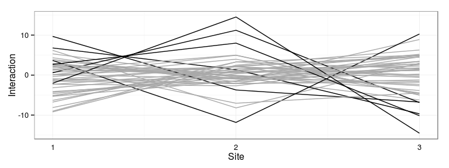
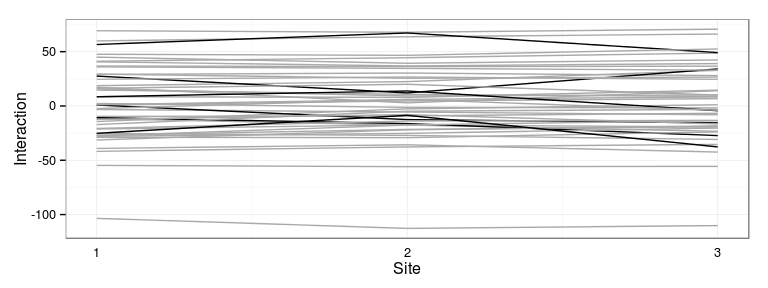

2015-06-27
data("douglas")
str(douglas)
'data.frame': 9630 obs. of 15 variables: $ self : num 135 136 137 138 139 140 141 142 143 144 ... $ dad : num 41 41 41 41 41 41 41 41 41 41 ... $ mum : num 21 21 21 21 21 21 21 21 21 21 ... $ orig : Factor w/ 11 levels "pA","pB","pC",..: 1 1 1 1 1 1 1 1 1 1 ... $ site : Factor w/ 3 levels "s1","s2","s3": 1 1 1 1 1 1 1 1 1 1 ... $ block: Factor w/ 127 levels "s1:1","s1:2",..: 11 44 24 28 13 35 8 40 3 15 ... $ x : num 6 27 45 57 57 60 63 66 66 75 ... $ y : num 81 135 90 45 327 474 450 21 234 483 ... $ H02 : int NA NA NA NA NA NA NA NA NA NA ... $ H03 : int NA NA NA NA NA NA NA NA NA NA ... $ H04 : int NA NA NA NA NA NA NA NA NA NA ... $ H05 : int 634 581 611 370 721 488 574 498 528 620 ... $ C13 : int 586 474 715 372 665 558 490 372 527 612 ... $ AN : Factor w/ 5 levels "1","2","3","4",..: NA NA NA NA NA NA NA NA NA NA ... $ BR : Factor w/ 5 levels "1","2","3","4",..: NA NA NA NA NA NA NA NA NA NA ...
with(douglas, table(orig, site))
site orig s1 s2 s3 pA 1381 1326 635 pB 870 815 111 pC 930 1030 80 pD 28 1 0 pE 265 0 0 pF 502 673 388 pG 0 116 26 pH 0 78 54 pI 0 78 52 pJ 0 78 55 pK 0 0 58
ggplot(douglas, aes(x, y, color = block)) + geom_point(show_guide = FALSE) + facet_wrap(~ site)
Excercise: write the following model in breedR:
\[ \begin{aligned} \mathrm{CR13} = & \mathrm{site} + \mathrm{orig} + fam + bl_\mathrm{site} + fsi + \varepsilon\\ fam \sim & \mathcal{N}(0, \sigma_f^2) \\ bl_s \sim & \mathcal{N}(0, \sigma_{b(s)}^2), \quad s = 1, 2, 3 \\ fsi \sim & \mathcal{N}(0, \sigma_{i}^2) \\ \varepsilon \sim & \mathcal{N}(0, \sigma^2) \end{aligned} \]
## create site-wise block variables (i.e. bl_i = bl * Ind(i)) dat <- transform(douglas, bl1 = block, bl2 = block, bl3 = block) dat$bl1[dat$site != "s1"] <- NA dat$bl2[dat$site != "s2"] <- NA dat$bl3[dat$site != "s3"] <- NA dat <- droplevels(dat) ## variable family (taken as a maternal effect) dat$fam <- factor(dat$mum) ## family-site interaction variable dat <- transform(dat, famxsite = factor(fam:site))
Model with origin and site as fixed effects, and family, blocks and family-site interaction as random effects
reml.tree <- remlf90(fixed = C13 ~ site + orig,
random = ~ fam + bl1 + bl2 + bl3 + famxsite,
data = dat, method = 'ai')
Linear Mixed Model with pedigree and spatial effects fit by AI-REMLF90 ver. 1.110
Data: dat
AIC BIC logLik
109427 109470 -54708
Parameters of special components:
Variance components:
Estimated variances S.E.
fam 1339.70 235.07
bl1 736.37 182.76
bl2 66.46 50.84
bl3 1233.80 385.47
famxsite 118.43 61.54
Residual 13653.00 211.56
Fixed effects:
value s.e.
site.s1 503.4873 7.4887
site.s2 550.2785 6.7923
site.s3 474.9609 9.6581
orig.pA -8.9503 4.4835
orig.pB 0.0000 0.0000
orig.pC -42.4425 9.4899
orig.pD 52.2017 44.8236
orig.pE -26.2352 18.7055
orig.pF -37.0728 11.3151
orig.pG -47.1587 23.2942
orig.pH -14.7085 26.4218
orig.pI -49.8486 29.8747
orig.pJ -57.2313 26.3383
orig.pK -53.7943 28.7336
Excercise: produce the following plots:
 
reml.tree$var
Estimated variances S.E. fam 1339.700 235.070 bl1 736.370 182.760 bl2 66.463 50.844 bl3 1233.800 385.470 famxsite 118.430 61.543 Residual 13653.000 211.560
with(reml.tree,
var['fam', 1] / (var['fam', 1] + var['famxsite', 1])) %>%
round(2)
[1] 0.92
Excercise: produce the following interaction plot:
Consider only families present in all the 3 sites
famxsite.tbl <- table(dat$fam, dat$site) fam3.idx <- apply(famxsite.tbl, 1, function(x) all(x>0)) table(fam3.idx)
fam3.idx FALSE TRUE 64 45
Sum of squares by family (across sites) divided by total sum of squares
dplyr)(dat.ecov <-
dat.fsi %>%
group_by(fam) %>%
summarise(ssfam =
sum(pred_fsi**2)) %>%
filter(fam3.idx) %>%
mutate(fratio = ssfam / sum(ssfam)))
## Check
stopifnot(
all.equal(sum(dat.ecov$fratio), 1)
)
Source: local data frame [45 x 3] fam ssfam fratio 1 1 18.447072 0.006589986 2 2 8.286972 0.002960417 3 3 58.993908 0.021074836 4 4 109.377567 0.039073769 5 5 4.886922 0.001745792 6 7 20.096726 0.007179304 7 8 33.322147 0.011903920 8 9 10.683869 0.003816679 9 10 18.413615 0.006578034 10 11 67.250109 0.024024261 .. ... ... ...
threshold <- 0.05 dat.ecov$hi <- dat.ecov$fratio > threshold ggplot(dat.ecov, aes(fratio, fill = hi)) + geom_histogram(show_guide = FALSE)
Most interactive families: 24 28 38 48 105 106
Represent the families which interact the most with the sites:
The predicted genetic effect is the sum of the family effect and the family-site interaction (Excercise).
## reshape the genetic values ## by family (dat.gen <- dat.fsi %>% select(fam, site, pred_gen) %>% tidyr::spread(site, pred_gen) %>% tbl_df() )
Source: local data frame [109 x 4] fam s1 s2 s3 1 1 0.7708066 4.629670 6.755107 2 2 -54.7085993 -55.876654 -55.599421 3 3 -27.5767262 -17.541736 -19.202094 4 4 18.6370661 22.462160 32.831870 5 5 -9.5945562 -9.072929 -6.714122 6 6 -36.1778425 -31.010280 NA 7 7 44.9607625 39.364452 42.434652 8 8 41.1998076 44.446619 48.712357 9 9 40.6242870 36.905050 39.053858 10 10 14.6311835 10.742742 8.711473 .. ... ... ... ...
Kendall (top) and Spearman (bottom)
| s1 | s2 | s3 | |
|---|---|---|---|
| s1 | 1.000 | 0.875 | 0.834 |
| s2 | 0.970 | 1.000 | 0.851 |
| s3 | 0.951 | 0.959 | 1.000 |